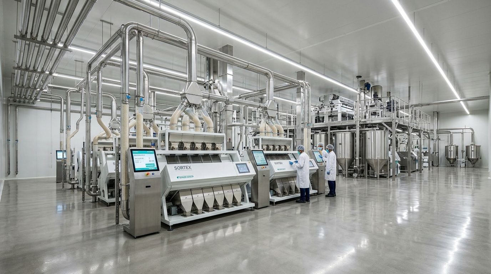
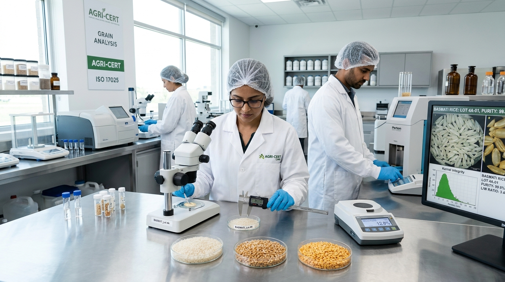

Empowering Global Grain Supply with Mill-Direct Precision
Over three decades of agricultural milling heritage, advanced Buhler Sortex optical sorting lines, centralized climate-controlled godowns, and institutional multi-modal commodity dispatch.
Bridging Farm Clusters to Institutional Food Supply
Founded in 1994, AgroGrains has grown from a regional paddy processing unit into one of the continent's most dependable direct-mill agricultural merchants. We eliminate speculative brokers by partnering directly with farmer-producer clusters across the Indo-Gangetic and Deccan grain belts.
Our integrated milling complexes are engineered with German Buhler de-stoners, multi-tier polishes, and high-resolution RGB optical sortex systems. Whether packaging 25kg BOPP bags for tier-1 supermarket chains or stuffing 1,000 MT break-bulk vessel holds for government food programs, our strict moisture and purity benchmarks protect institutional balance sheets against storage shrinkage and contamination.

Farm-to-Port Quality Control Architecture
Every single shipment adheres to an unbroken cold-chain, rigorous testing, and standardized multi-stage milling protocol.
Direct Mandi Sourcing
Agronomist-supervised cluster procurement ensures harvest timing, minimal pesticide residue, and seed pedigree verification.
Multi-Pass Sortex Milling
Automated paddy husking, multi-break whitening, silky water-polish lines, and infrared cameras separating discolored kernels.
Atmospheric Preservation
Galvanized silos and sealed godowns with forced aeration and humidity probes keeping grain moisture locked at < 12.5%.
Palletized Containerization
BOPP and woven poly bags robotically palletized, moisture-shrink wrapped, and stuffed into sea containers with silica gel desiccants.
Certified Pre-Shipment Laboratory Analysis
Every truckload and shipping container dispatch leaves our gates with an official Certificate of Analysis (COA) issued by our on-site ISO 17025 accredited laboratory.
NIR Moisture & Humidity Testing
Certified moisture levels below 12.5% on Basmati and 13.0% on regional non-basmati varieties prevent mycotoxin and fungal infestation.
Average Grain Length (AGL) Caliper Benchmarking
Strict micrometric measurement confirming 8.35mm+ raw grain length for 1121 Basmati with elongation ratio surpassing 2.2x upon boiling.
Purity & Foreign Matter Ceiling (< 0.1%)
Zero tolerance for stones, weed seeds, or immature grains. Broken grain percentage customized from 1.0% export grade up to institutional 25% blends.

Port Terminals & Seamless Global Container Stuffing
From our dedicated dry-port terminal connected to 6-lane national expressways and rail freight corridors, AgroGrains executes flawless FOB, CFR, and CIF supply contracts.
- Direct Container Stuffing: 20ft & 40ft sea containers loaded on-site to minimize transit handling damage.
- Certified Fumigation: Aluminium Phosphide and Methyl Bromide fumigation adhering strictly to import country quarantine standards.
- 24/7 Weighbridge Accuracy: Dual electronic 100 MT weighbridges with tamper-proof digital tare and gross records.
- Custom Export Packaging: 5kg, 10kg, 20kg, 25kg, 50kg BOPP, Non-Woven, and 1,000kg FIBC Jumbo Totes with private labeling.
Global Food Safety Accreditations
Our processing facilities and storage warehouses undergo unannounced audits to ensure compliance with international food hygiene regulations.
ISO 22000:2018
Certified Food Safety Management System covering procurement, cleaning, polishing, Sortex sorting, and grain packing.
HACCP Codex Alimentarius
Hazard Analysis Critical Control Point system preventing biological, chemical, and physical contamination throughout milling lines.
APEDA Export Recognized
Registered export processor with the Agricultural and Processed Food Products Export Development Authority for Basmati and non-basmati grains.
FSSAI Central License
FSSAI License #10019022009871 authorized for large-scale inter-state wholesale grain packaging, storage, and institutional distribution.
Halal & Kosher Compliant
Dedicated grain processing lines certified free of animal fats, cross-contamination, and compliant with Middle East and European dietary laws.
US FDA Registered
Registered food facility meeting United States FDA Bioterrorism Act standards for institutional food imports and traceability.
Three Decades of Commodity Leadership
A legacy built on farmer trust, technical precision, and uninterrupted trade fulfillment.
Founding & First Mill
Established as a single-line 5 MT/day paddy husking plant servicing regional consumer cooperatives.
Modern Steam & Parboiling
Commissioned continuous stainless-steel parboiling and steam boilers, scaling daily output to 150 MT/day.
Optical Sortex & Export Depot
Installed Buhler Sortex optical sorting lines and attained APEDA export registration, launching sea container shipping.
Automated Silos & 500k MT Scale
Surpassed 500,000 MT annual throughput with 40,000 MT climate-controlled silos and direct mandi rail linkage.
Partner with a Dedicated Grain Processor
Connect directly with our institutional commodity desk to receive physical grain samples, schedule pre-shipment milling inspections, or negotiate structured forward contracts.